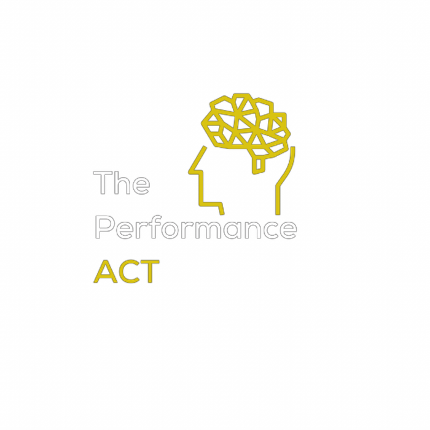
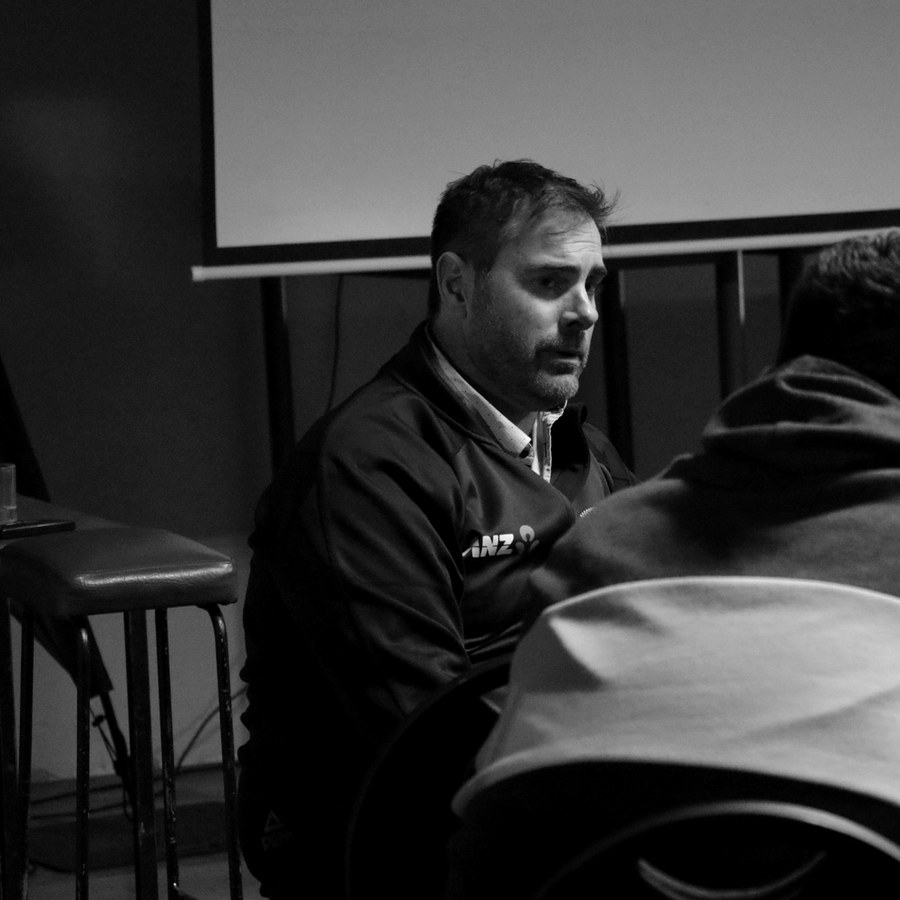
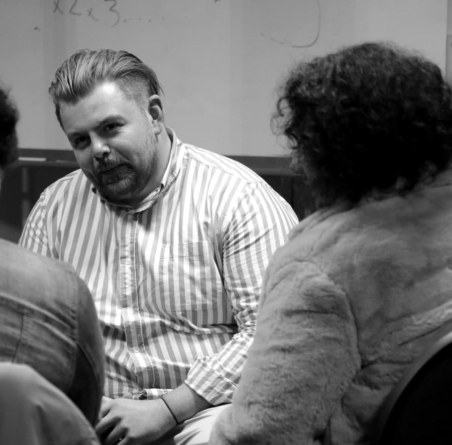

A Guide for Athletes · Ages 13–18A straight answer for athletes. What it is, what it isn’t, what the research says, and what you’re allowed to ask for.
Most athletes we meet have never had anyone explain this properly. They’ve heard the words — sport psych, mental skills, mindset, therapy — and they’ve quietly filled in the gaps themselves. Usually with something a bit worse than the truth.
So this document does one job: it tells you what one-to-one psychology support in sport actually involves, in plain language, before you have to decide anything.
You’ll notice we keep coming back to the gym. That’s deliberate. The gym is the clearest way we know to explain what this work is, because you already understand how the gym works — the reps, the programme, the boring weeks, the fact that you don’t wait until something tears before you start. Everything on the mental side runs on the same logic. It just doesn’t get talked about the same way.
We’ve also included what the research says, including the parts that are less flattering. If someone tells you a psychological approach is guaranteed to work, they’re overselling it. We’d rather you had the real numbers and made your own call.
Athletes roughly 13 to 18, in any sport, at any level — club, school, regional, national. You don’t have to be in a high-performance programme. You don’t have to have a problem. You’re also welcome to hand this to a parent, caregiver, coach or whānau member if that’s easier than explaining it yourself.
Before the how, the why. These are the commitments underneath every session, every programme and every conversation we have with an athlete.
Evidence-based programmes led by high-quality practitioners, integrating research, clinical expertise and your values to create meaningful, lasting change.
We work across sport and education to reach diverse communities. Committed to Te Tiriti o Waitangi, we practise in ways that are culturally safe and honour every participant.
You are the expert on your own experience. Every challenge is valid, and every person deserves to be heard and supported.
Every athlete has a mental approach. Nobody competes without one. The only question is whether yours was built on purpose or picked up by accident.
Think about what you already do. You have a way you warm up. You have things you say to yourself after a mistake. You have a way of handling the twenty minutes before you compete — music, silence, mates, distance. You have a story you tell yourself about what it means when you get dropped, or benched, or beaten by someone you used to beat.
None of that is neutral. All of it affects how you perform. And almost none of it was designed. It got assembled out of whatever you absorbed from coaches, teammates, family, and the internet, somewhere around age eleven, and then it just kept running.
Working with a psychologist is the process of taking that system out, looking at it properly, keeping the parts that work, and rebuilding the parts that don’t. That’s it. That’s the whole thing.
Nobody thinks it’s strange to have a strength programme. You don’t lift because your legs are broken. You lift because you want more of something — power, speed, durability — and because leaving it to chance produces a worse athlete than training it on purpose.
Your attention, your reaction to pressure, your ability to reset after a mistake: these behave exactly like physical capacities. They can be assessed. They can be loaded. They respond to structured practice and they fade without it. The only real difference is that nobody’s ever handed you a programme for them.
Partly it’s history — the mental side of sport was ignored for a long time, and when people did talk about it, it was usually in the language of weakness. Partly it’s that you can’t see it. A hamstring strain shows up on a scan. Losing your focus on the third-last hole doesn’t.
And partly it’s that the only time most athletes hear about psychology is when something has already gone badly wrong. So the whole field gets filed under “for when you’re struggling”, which is a bit like deciding the gym is only for people coming back from injury. Rehab absolutely happens there, and it matters. It’s just not the only reason anyone walks in.
The specific capacities differ from athlete to athlete, but they usually come from a familiar list: holding attention on what matters when there’s noise everywhere else; recovering quickly after an error instead of carrying it for the next twenty minutes; making decisions under fatigue; managing the gap between how good you want to be and how good you currently are; staying motivated across a long season when the initial excitement has worn off; and knowing what you actually want out of your sport, so that the sacrifices feel like they’re paying for something.
None of that requires anything to be wrong with you. It requires the same thing everything else in your sport requires: a look at where you’re at, a plan, and some reps.
This is the question we’re asked most, and it’s a fair one, because the titles genuinely overlap. Here’s the honest version, including a detail almost nobody knows.
In Aotearoa New Zealand there is no such thing as a “registered sport psychologist”. It isn’t a recognised title here. The New Zealand Psychologists Board registers people into defined scopes of practice — Psychologist, Clinical Psychologist, Counselling Psychologist, Educational Psychologist, Neuropsychologist — and sport isn’t one of them.
So the accurate description of what we are is this: we are registered psychologists who work in sport. The registration is in psychology. The specialisation is in the setting, built through years of working in it. If you ever see someone advertising themselves as a “registered sport psychologist”, that isn’t a qualification they hold — it’s a description they’ve chosen.
“Psychologist” is a protected title under the Health Practitioners Competence Assurance Act 2003. To use it, a person must be registered with the New Zealand Psychologists Board, hold a current practising certificate, have completed a minimum of six years of university study plus supervised practice, maintain ongoing professional development and supervision, work under a code of ethics, and be answerable through a formal complaints process.
“Mental skills coach”, “mindset coach” and “performance coach” are not protected. Anyone may use them. That does not mean the people using them are unqualified — plenty of mental skills coaches are excellent and have exactly the right training for the work they do. It means the title alone tells you nothing, so you have to ask.
| Mental skills / performance coach |
Registered psychologist working in sport |
|
|---|---|---|
| Focus | Performance skills — routines, goal setting, focus, confidence, self-talk. | Those same skills, plus the psychology underneath them: identity, pressure, motivation, injury, transitions, wellbeing. |
| Title protected by law? | No — anyone may use it. | Yes. Registration and a current practising certificate are required. |
| Regulated by | Not regulated by law. May belong to a voluntary body. | NZ Psychologists Board, under the HPCA Act 2003, with a formal complaints pathway. |
| Can assess for mental health difficulties | No. | Yes, where the psychologist’s scope and competence allow it. |
| Good fit when | You want to sharpen specific performance skills and nothing else is going on. | You want performance work, or you’re not sure where the line sits, or both are true at once. |
Think about the difference between a strength and conditioning coach and a physiotherapist. Both work on your body. Both know a lot. You’d go to the S&C coach to add ten kilos to your squat, and to the physio when your knee is doing something it shouldn’t.
But here’s the thing you already know from being in a good programme: the physio doesn’t only see injured people, and the S&C coach doesn’t stop caring when you get hurt. They overlap constantly. And a physio can do everything an S&C coach can do for your squat, plus handle the knee if it turns out the knee is the actual problem.
That’s the practical difference here. A registered psychologist is trained across both territories, so you don’t have to correctly diagnose your own situation before you book.
Most of the time you don’t need to work out which category your situation belongs in. That’s the practitioner’s job, not yours. What you need is someone qualified to notice when a performance conversation turns into something else — because it often does, and usually without warning.
An athlete comes in wanting to fix their pre-race nerves. Three sessions later it turns out they haven’t slept properly in four months, or they’re carrying something from an injury a year ago, or the thing driving the nerves is a relationship with a parent that nobody’s ever named out loud. That’s not a rare plot twist — it’s closer to routine, and there is nothing unusual or alarming about being that person.
Nothing about that makes a good mental skills coach less valuable. It just means the range of things a practitioner can safely hold is worth knowing about up front.
We hear this a lot. There are two things bundled inside that sentence, and it’s worth pulling them apart, because only one of them is really a question.
The first is factual: is this the same thing as therapy? That’s fair, it has a clear answer, and we’ll give it to you below.
The second usually goes unsaid: …and it would say something bad about me if it were. We’re not going to nod along with that one. Needing psychological support isn’t a character flaw, a weakness, or evidence that you’re not tough enough for your sport. It’s a normal thing that happens to a very large number of people, including plenty whose careers you’d take in a heartbeat. Letting that idea sit unchallenged would make this document easier to read — and would also make us part of the problem.
When people say the word, they usually picture one specific image: a room, a couch, a box of tissues, and someone asking how your childhood made you feel. That version exists, and it helps a great many people. It’s also a small slice of a very large field, and it isn’t what a session with us usually looks like.
Here’s a more useful definition. Therapy is a structured, evidence-based way of changing how you respond to your own thoughts, feelings and situations. That’s the whole category. The couch, the childhood and the tissues are a stereotype attached to one corner of it.
Most of the work we do with athletes sits in a different corner — skills, situations, and what you do under pressure on Saturday. Some of the athletes we see are also working through something harder than that. That work is no less valuable, and it usually takes more courage, not less.
Physiotherapy is a good word to sit with. When you’re rehabbing a torn ACL, that’s physiotherapy. When your physio gives you single-leg balance work in pre-season so you don’t tear one, that’s also physiotherapy. Same profession, same evidence base, sometimes the same exercises.
And notice what doesn’t happen in a good environment: nobody thinks less of the person in the rehab room. They’re doing exactly what their body needs at the point they need it, which is what being an athlete looks like over a long enough timeline.
Psychological work runs along the same spectrum. Where you happen to be standing on it isn’t a verdict on you.
Mostly it looks like a focused conversation with a whiteboard. You describe a situation in detail — a specific race, a specific moment in a specific game. We slow it down and work out what was actually happening: what you were paying attention to, what your body was doing, what you told yourself, what you did next, and whether that helped. Then we build something you can practise at training on Thursday.
It’s more like a video review session than anything you’ve seen in a film. You’ll be asked a lot of questions. You’ll do most of the talking. You’ll usually leave with something concrete to try.
You do not need to be struggling to come, and most of the athletes we see aren’t. You are also not disqualified if you are.
Sport adds pressures a lot of people never carry: selection, injury, weight, performing in public, and having a large part of who you are tied to something that can be taken away in an afternoon. Anyone can hit a hard patch inside that. It isn’t a sign you were never cut out for it, and it isn’t rare.
If something bigger is going on, it matters that the person sitting across from you is trained to recognise it and qualified to help. That’s not a warning label. It’s the reason the qualification exists.
Plenty of athletes tell us the thing that put them off wasn’t the work — it was what they assumed it would say about them. That going means admitting weakness, or that word would get around, or that a coach would file them under “fragile”.
That worry deserves to be taken seriously rather than waved away, because it’s extremely common and because it costs people things. Research with young elite athletes has found the same result repeatedly: the biggest single thing stopping athletes from getting support is stigma — the fear of what people will think. Bigger than cost, bigger than time, bigger than being able to get an appointment.1
So four out of five are managing on their own — not because support wouldn’t have helped, but largely because of a story about what asking would mean about them. That story is worth naming out loud, and it’s not one we’re willing to quietly build a document around.
Not a mystery, not open-ended, not forever. Here’s the shape of it — from the first kōrero to the last session.
Before anything starts there’s a free, no-pressure conversation about what’s going on and what you’re hoping for. You can ask anything. You’re not committing to anything. Sometimes the honest answer at this stage is that you don’t need a psychologist — you need a conversation with your coach, or better sleep, or a lighter competition schedule. If that’s what it looks like, we’ll tell you. That’s a good outcome, not a failed sale.
The first proper session is mostly us asking and you talking. Your sport, your history, what’s working, what isn’t, what a good week looks like, what a bad one looks like, what you’re actually chasing and why. We’ll ask about sleep, load, school, injuries and life outside sport — not to be nosy, but because those things drive performance more than most athletes expect. Roughly the equivalent of a movement screen and a training history before anyone writes you a programme.
We map out what seems to be happening and why, and we show you the map. You get to argue with it. This matters, and it’s one of our three pillars: you are the expert on your own experience. If the explanation doesn’t ring true to you, it’s the wrong explanation, and we change it. From that map comes a small number of specific targets. Not fifteen. Usually two or three.
This is the main body of the work, and it’s the most gym-like part. You learn a skill in session, you practise it somewhere low-stakes, you report back on what happened, we adjust. Repeat. Skills might include attention control, working with unhelpful thoughts, managing physical arousal, pre-performance routines, reset routines after errors, or values work — getting clear on what you’re actually in this for. Between sessions you’ll have access to GROW, our online hub, where the resources and session materials live so you’re not relying on memory or a scrap of paper.
A skill that only works in a quiet room is not yet a skill. So we deliberately take it into harder environments: pressure drills at training, then trials, then competition that actually matters. Some of it won’t hold the first time. That’s information, not failure — it tells us exactly where the next block of work goes.
We check against the targets we set at the start. What’s changed, what hasn’t, what’s worth continuing. Plenty of athletes finish here, come back for a block before a pinnacle event, and that’s it. Others shift to occasional check-ins. Both are normal. There is a defined end. You are not signing up for something indefinite.
You wouldn’t judge a strength block on how you felt after session one. You’d give it a training cycle, test it, and adjust. Same here. Most athletes notice something shifting within three or four sessions, and most pieces of work run somewhere between six and twelve — though it depends entirely on what you came in for. And like the gym: the sessions aren’t where the change happens. The change happens in the reps you do between them.
For a lot of athletes this is the actual deciding question, and it rarely gets answered clearly. So, clearly:
What you say in the room is confidential. It is not reported back to your coach, your selectors, your school or your team by default. Not the content, not the tone, not “how you seemed”. Your health information is protected under New Zealand law, and psychologists work under a professional code that takes this seriously.
If it would genuinely help for us to talk to your coach, physio or whānau about something specific, we’ll ask you first, we’ll agree exactly what is and isn’t shared, and you can say no. You can also change your mind later.
There are a small number of situations where a psychologist has to act on information even without your agreement. Broadly: if there’s a serious risk to your safety or someone else’s, or where the law requires it, such as a court order. Any psychologist you see should explain these limits to you at the start, in plain language, before you tell them anything. If they don’t, ask.
Your parents, caregivers or whānau are usually involved in agreeing to and arranging the support, and often in paying for it. That doesn’t mean they get a transcript. In practice, we’ll talk with you and your whānau early on about what gets shared and what stays in the room, so everyone knows where they stand before the work starts — and so you’re not left guessing. These arrangements are made with you, not about you.
None of these make you difficult. They’re the ordinary terms of good, safe support — and a practitioner worth working with will be glad you know them.
Short answer: yes — but not like magic, and not for everyone. Here’s the honest version, including the bits that don’t make us look good.
The way you test whether something works is to take two groups of athletes who are pretty similar, give one group the psychology work and the other group nothing, and then see whether the first group ends up doing better. One study like that doesn’t prove much on its own — maybe that group got lucky, or was unusually keen to begin with. So every few years researchers gather up every study ever run on a question and add them all together. That gives you a far more trustworthy answer than any single study can.
That’s where everything below comes from. The small numbers dotted through this section point to the actual studies, which are listed at the back if you ever want to look them up yourself.
Researchers pulled together forty years of studies on psychology and sport performance. Athletes who did this kind of work performed better than athletes who didn’t — not by a landslide, but by a real and repeatable margin. The things with the strongest track record were skills training (routines, focus, goal setting, self-talk), mindfulness and acceptance approaches, and imagery — mentally rehearsing a performance in detail before you do it.4
Some studies are built better than others. The strongest ones split people into groups properly and measure real results — times, scores, placings. Weaker ones rely on athletes rating their own performance afterwards, which isn’t the same thing at all.
When one large review in 2024 kept only the strongest studies and set the weaker ones aside, the performance benefit stopped being clear enough to call proven. The researchers’ conclusion was that the findings look promising, but the research itself isn’t good enough yet.4
You should hear that from us rather than find it out later. It doesn’t mean the work doesn’t help — but anyone promising you a guaranteed improvement is telling you something the evidence doesn’t back up.
This is the part that gets talked about least and probably matters most — because most people reading this won’t end up earning a living from their sport, but all of them will spend years of their life inside it.
Researchers have followed teenage athletes over time to see who stays in their sport and who walks away. What predicts it isn’t talent. It comes down to three things: whether you feel you have some say in what happens to you, whether you feel like you’re actually getting good at it, and whether you feel like you belong there. Athletes with those three tend to keep playing. Athletes who are mostly playing out of pressure, guilt or obligation tend to stop.7 When researchers looked across all the studies of why kids and teenagers quit sport, the reasons were overwhelmingly about how they felt — not about their bodies.8
Burnout works the same way. That’s the flat, worn-down, can’t-really-be-bothered feeling, where something you used to love starts feeling like an obligation. Studies of programmes built to help young athletes with it found that the kinds of approaches we use reduced most of it.9, 10
Nobody lifts purely for the number on the bar. You lift so you can hit contact without getting hurt, hold your technique at the end of a match, and still be playing at twenty-five. Durability is the point.
Same here. Some of this is about performing better on Saturday. A lot of it is about still wanting to be there next season.
We don’t put everyone through the same programme — we use a range of approaches and shape them around the person in front of us. A lot of our work comes from something called ACT (said as a word, not spelled out; it stands for acceptance and commitment therapy).
The idea behind it is a change of target. Most people assume the goal is to get rid of the nerves, the doubt and the unhelpful thoughts. ACT says: good luck with that — and also, you don’t have to. The goal is to get better at performing while all that is going on, and to keep doing what actually matters to you anyway.
Which is a practical place to start, because you can’t reliably talk yourself out of feeling nervous before a final. If you spend the warm-up fighting your own nervous system, that’s attention you no longer have for the race. If you can let the feeling be there and get on with it, you keep that attention.
Most research in this area has been done on adults, which is a fair criticism of the field. That’s changing — though the review above is upfront that there still aren’t many high-quality studies in this age group. A trial with elite teenage athletes using a similar approach found improvements in the same areas, and in how satisfied athletes were with how they were performing.6
Collected from the athletes we work with — including the ones people tend to ask right at the door, on the way out.
Technically, no — and neither is anyone else in New Zealand, because it isn’t a registered title here. We’re registered psychologists whose work is in sport. It’s a small distinction that tells you something useful: our qualification is in psychology, and our experience is in your world.
This is the most common worry, and a reasonable one. But there’s a difference between thinking about your thinking and being stuck inside it. Most of the work goes in the opposite direction from analysis — it’s about getting your attention out of your head and onto the ball, the water, the road. Athletes who overthink often find this is the part that helps most.
No. We’ll ask about your history in sport because it’s relevant. If something from outside sport is clearly affecting you, we might ask about it — and you can decline. You control what you share.
Then we ask better questions. Nobody expects you to arrive with a prepared speech. Turning up and saying “I don’t really know why I’m here” is a completely normal opening.
A coach can suggest it or arrange it. They can’t make you engage, and forced attendance doesn’t work anyway. If you’re here because someone else sent you, say so in the first session — that’s useful information, not an insult.
Usually not for the main work, though whānau may be involved at the start and at review points, especially if you’re younger. This gets agreed openly at the beginning rather than decided behind you.
Then you get upset, and that’s genuinely okay. It happens, we’re not thrown by it, and nobody makes it awkward afterwards. Usually it means you’ve reached something that actually matters to you — which is useful information, not something to be embarrassed about.
It depends on what you’re working on. Often somewhere between six and twelve, sometimes fewer, occasionally more. You’ll get a rough estimate early, and it gets reviewed as you go rather than quietly extended.
Yes. The pressures scale but the mechanics don’t change much. A fourteen-year-old worried about being dropped from a school first XI is dealing with the same psychology as a professional worried about a contract. Community sport is where most of our work happens.
Very common, and completely fine. Sport is often just where the problem becomes visible, because it’s where you’re being measured. We work with the whole picture.
No. Forced positive thinking has a poor track record in sport and tends to backfire under real pressure — telling yourself you feel great when you plainly don’t just adds a second problem. We’re more interested in what you do when you feel awful.
That’s not our call and it isn’t the agenda. If you’re seriously questioning whether you want to keep going, we’ll help you think it through properly — which is different from pushing you either way. Some athletes come out of that more committed than before.
Lots of people have. Being told to sit still and watch your breath while your season is falling apart is not everyone’s answer. The underlying skill has many forms, most of which look nothing like meditation, and several of which happen at full speed with your eyes open.
Not homework as such, but yes, there’s practice — usually small and folded into training you’re already doing. This is the part that determines whether anything changes. Same as the gym: the session is the instruction, the week is the training.
Say so. The working relationship is one of the better predictors of whether this helps, so a bad fit is worth fixing early. Asking for someone else is not rude and won’t offend anyone.
Yes, and it works — useful if you’re rural, travelling, or fitting sessions around school. We work with athletes right across Aotearoa this way. Some prefer in person. Both are legitimate.
Clinical notes are kept — that’s a professional requirement, and they’re stored securely. They are not shared with schools, selectors or sporting bodies, and they don’t follow you around. You’re entitled to ask what’s in them.
You’re allowed to interview the person you’re thinking of working with. We’d encourage it — including with us.
You can check anyone’s registration yourself on the New Zealand Psychologists Board public register. If a practitioner is uncomfortable with these questions, that in itself is an answer.
You wouldn’t take a programme from someone who couldn’t explain why it was built that way. Apply exactly the same standard here.

Over a decade supporting athletes and coaches, from Olympic campaigns to community sport. Specialises in leadership, coach development and team building.

A background in rugby, coaching and clinical practice. Leads research on effective coaching conversations, and is committed to making psychology accessible in community sport.
That’s a fine conclusion to reach, and there are other doors. Your GP can help and can refer you on. School counsellors are free and often underrated. If you’re in a high-performance programme, there may already be psychology support attached to it that you can access at no cost — worth asking your coach or programme manager before paying for anything privately.
The Performance Act is a psychology practice working in sport — not a crisis or emergency service. If you or someone you care about needs support right now, these services are free, confidential and available 24/7. None of them require you to have anything figured out before you get in touch.
More resources at mentalhealth.org.nz and depression.org.nz.
The first step is a free kōrero, not a commitment. You can get in touch yourself, or a parent, caregiver, whānau member or coach can on your behalf. We’ll talk about what’s going on, what you’re after, and whether we’re the right people for it. If we’re not, we’ll say so and point you somewhere better.
Every athlete’s situation is different, and nothing in this document is individual advice. It’s here so you can make an informed decision about whether to have a conversation — nothing more than that.
Every number quoted in this guide comes from one of these — all peer-reviewed, published studies you can find online if you ever want to read one for yourself.
We’re registered psychologists working in sport — supporting athletes, coaches and whānau across Aotearoa, in person and online. A free, no-pressure first conversation. Same principles, same respect, whoever’s in the room.
Let’s have a kōrero